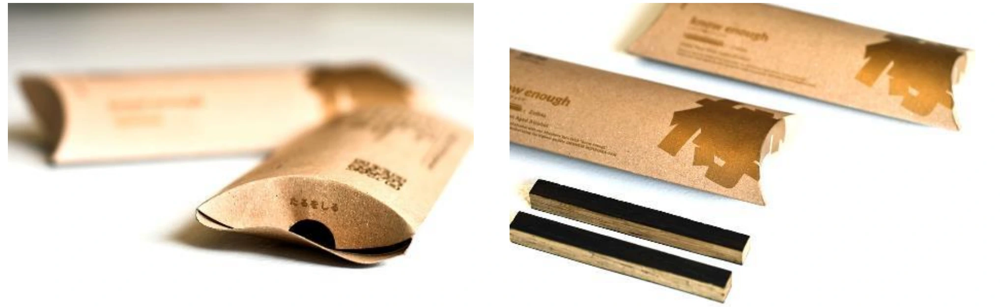

食・農 / 環境 / 埼玉
ミズナラスティック「KNOW ENOUGH」

PROJECT INFORMATION
受賞リリースを見る ↗（新しいタブで開く）埼玉県新商品AWARD 2022で大賞を受けた、田口木工のミズナラスティック「KNOW ENOUGH」。ブランディングとパッケージデザイン等を担当しています。
01 / 背景とテーマ
輪郭を与える
秩父は、イチローズモルトのまちです。けれど、その味を支えている樽そのものを知っている人は、そう多くありません。ミズナラは、ウイスキーの樽になる木です。この商品は、その樽を知ってもらうために始まりました。名前はそのまま「樽を知る」。英字で KNOW ENOUGH と書きます。樽を知ることは、秩父を知ること。ふるさとの味が、どこから来ているのかを知ることでもあります。
02 / SCHEMAの担当範囲
全体を整える
SCHEMAはネーミングからブランディング、パッケージデザインまでを担当。田口木工が秩父市産の樽から削り出したスティックを、お酒に一本沈めておく。すると1週間から10日ほどで酒は琥珀色に変わり、甘くまろやかな風味になります。樽の内側で何年もかけて起きていることを、手元のボトルで起こせる形にしました。木工品の棚ではなく、酒のとなりに並ぶことを前提に設計しています。
03 / 取り組みの視点
枠組みをひらく
埼玉県新商品AWARD 2022、工芸・雑貨カテゴリーで大賞を受けました（応募58点）。地域の素材を土産物に仕立てるのではなく、その素材が何をしている木なのかから伝える。産地の説明ではなく、味の変化という体験のほうから入る組み立てです。
AWARDS
受賞
- 2022
- 埼玉県新商品AWARD 工芸・雑貨カテゴリー 大賞（応募58点）